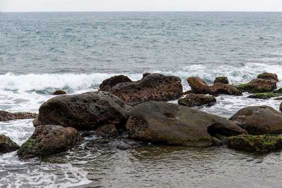
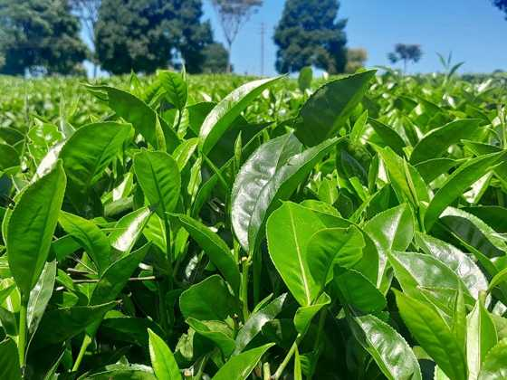
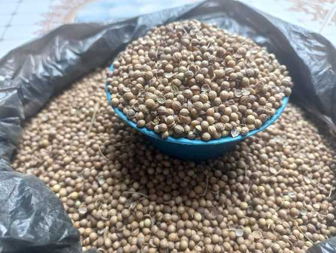
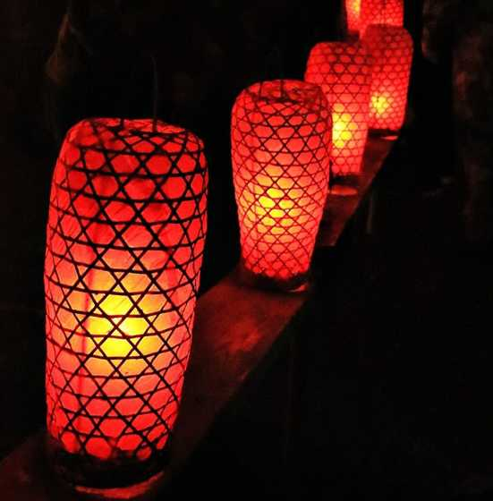
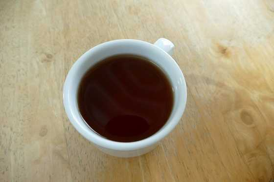
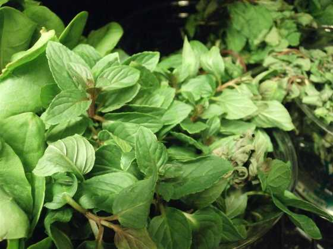
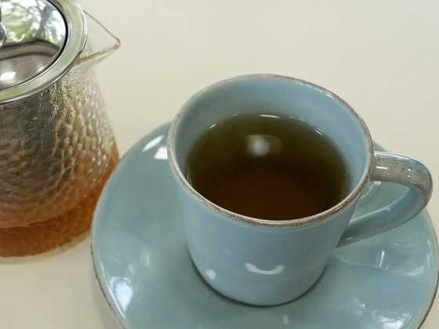
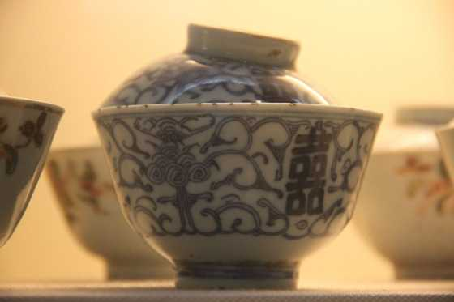

千葉県匝瑳市・九十九里ビーチライン沿い
日常に、
ささやかなスパイスを。
キッチンカーから「いつでも帰ってこられる場所」へ。紗茶屋spiceは、チャイとスパイスカレーのお店です。
お店の由来・想い
地元に、チャイとスパイスカレーを。
クラウドファンディングのページによると、店主の実紗さんは匝瑳市で生まれ育ち、地元にチャイやスパイスカレーのお店が少ないことからキッチンカーを始めました。ただ、キッチンカーは天候や気温に左右され、出店を見合わせることも多かったそうです。そこで「いつでも同じ場所に帰ってこられるお店」をつくりたいと考え、実店舗を構えました。新しいコンセプトは「日常に ささやかな スパイス を」。場所は九十九里ビーチライン沿いで、2026年5月に開業したと紹介されています。



情報源: CAMPFIRE プロジェクトページ / ほくとうらいふ(新規オープン情報) / Instagram
「紗茶屋」という店名の意味・由来は確認できませんでした。ページ内の写真は、雰囲気を伝えるフリー素材です。
メニュー・提供内容
スパイスの香るチャイと、日替わりのカレー。
紹介ページで確認できた範囲のご案内です。写真はすべてイメージです。

チャイ
10種類以上のスパイス、きび砂糖、北海道産の牛乳、CTCアッサム茶葉でつくるとされています。1〜2か月ごとに変わる季節のチャイもあるそうです。

スパイスカレー
市販のルーや小麦粉を使わないグルテンフリーのレシピとされ、辛味スパイスは基本使わず、辛いもの好きの方は「辛さマシマシ」も選べるそうです。日替わりで季節の野菜・肉・魚のカレーも。
そのほか
食事・ドリンク・デザートの充実や焼き菓子、スパイスMIXなどが計画されていると紹介されています。提供の有無はお店にご確認ください。







| 価格 | 準備中 |
|---|---|
| 営業時間 | 準備中 |
| 定休日 | 準備中 |
口コミ
こんな声が聞こえてきそう(イメージ例)
以下は制作側が作成したイメージ例であり、実在のお客様の声ではありません。
スパイスの香りがやさしいチャイで、仕事帰りにほっとできそう。
辛さを選べるカレーなら、家族みんなで行けそうです。
海のそばまでドライブして、チャイを飲む休日もいいなと思いました。
アクセス
九十九里ビーチライン沿いへ。
| 所在地 | 〒289-3184 千葉県匝瑳市栢田7935-1 |
|---|---|
| 電話 | 準備中 |
| 営業時間 | 準備中 |
| 定休日 | 準備中 |
| SNS | Instagram @sasaya_spice |
営業時間などは変わることがあるため、最新情報はInstagramをご確認ください。